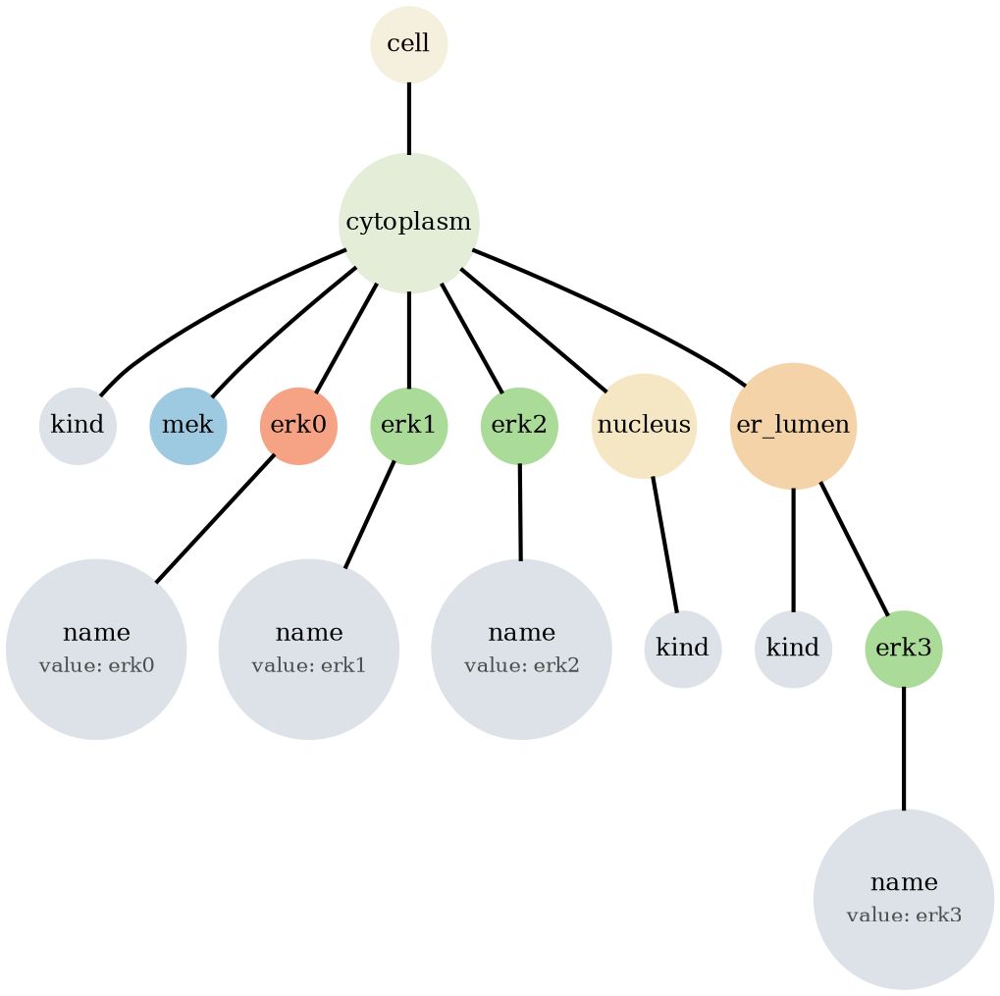
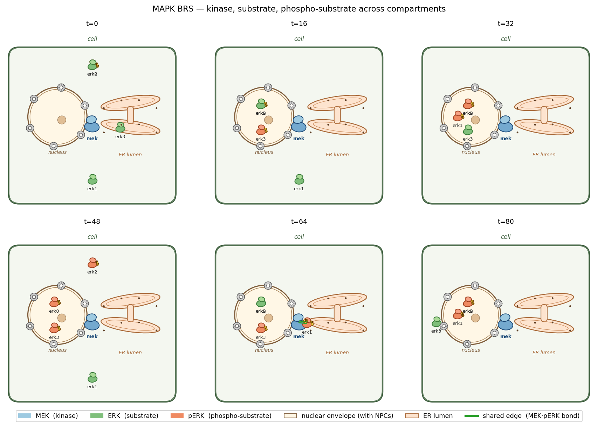
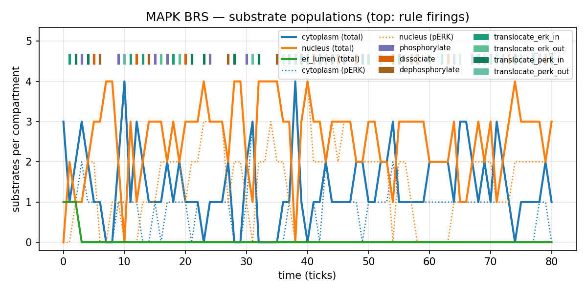
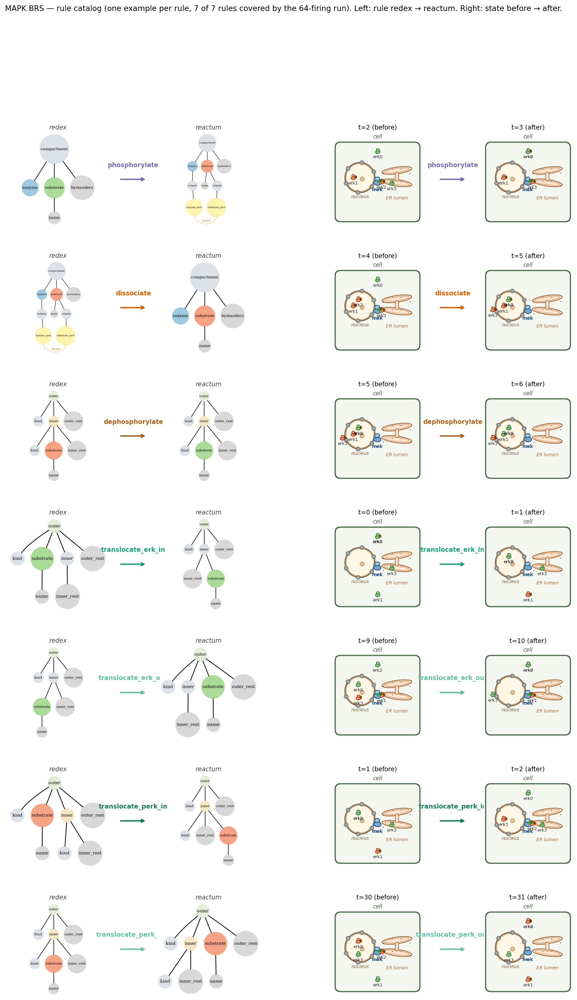
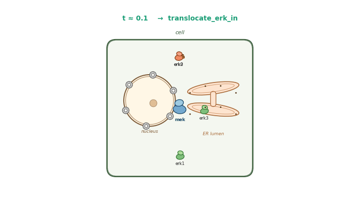

About / Overview
Explore the Spatio–Flux test suite
This page is a catalog of executable compositions built with the Process Bigraph protocol. Each entry below is a self-contained simulation that demonstrates how distinct modeling concerns—metabolism, spatial transport, particle dynamics, and structural change—can be composed through explicit interfaces and shared state.
Rather than presenting biological conclusions, the goal of this test suite is to make model structure visible and inspectable. Clicking into a simulation lets you see how it is built: which processes are present, how they are wired to state, and how different process families combine to form more complex behaviors.
Bigraph structure
Inspect a rendered process–bigraph showing state variables, processes, and their read/write dependencies.
Interactive state
Browse serialized state trees to explore spatial fields, particles, and intermediate variables.
Dynamics & behavior
View plots and animations illustrating spatial gradients, particle motion, growth, and division.
Composition documents
Download the machine-readable process–bigraph documents that define each simulation.
Scroll down to explore individual compositions, or use the Contents section to jump to a simulation.
Spatio–Flux process families
Think of these as lego bricks for multiscale simulation. Each family does one thing well—metabolism, transport, motion, coupling, or structural change— and complex behaviors emerge by composing families rather than extending any single process.
| Family | Color | Processes | Role |
|---|---|---|---|
|
Metabolic processes
|
Metabolism | DynamicFBA MonodKinetics SpatialDFBA |
Turns nutrients into growth. Computes uptake, secretion, and biomass production either at individual sites or across spatial grids by operating on substrate fields and biomass variables. |
|
Field transport
|
Transport | DiffusionAdvection |
Makes space matter. Updates dissolved species fields via diffusion and advection, so local metabolic activity can influence distant regions over time. |
|
Particle movement
|
Movement | BrownianMovement PymunkParticleMovement |
Moves agents through continuous space. Brownian motion provides stochastic movement; Newtonian motion adds mass, velocity, inertia, friction, and elastic interactions. |
|
Particle–field coupling
|
Coupling | ParticleExchange |
Bridges discrete and continuous. Mediates bidirectional exchange between particle-local state and spatial fields, syncing internal particle chemistry with nearby lattice values. |
|
Structural and boundary processes
|
Rewrite | ParticleDivision ManageBoundaries |
Changes the population. Rewrites the particle store by creating, removing, or relocating particles in response to conditions like growth thresholds or boundary crossings. |
Vivarium 2.0 ecosystem
Spatio–Flux is a reference application in the Vivarium 2.0 software suite: an open-source ecosystem for building, executing, and visualizing Process–Bigraph compositions.
bigraph-schema— Defines a compositional type system and hierarchical data structures using JSON-based schemas. Provides the type engine, schema compilation, state validation, and type-specific update operators used in process–bigraph delta semantics.process-bigraph— The dynamic core. Defines typed Process and Composite abstractions, event scheduling, global time management, and orchestration logic for executing process–bigraph documents.bigraph-viz— Parses process–bigraph documents and renders their structure as inspectable graphs.spatio-flux— A domain-specific application repository implementing concrete process families for metabolism, spatial fields, particle dynamics, and particle–field coupling, with an extended test suite of executable compositions.
References
How to read the bigraph visualization
Each diagram is a map of a composite simulation: what state exists, what processes run, and how data flows between them.
1) Nodes
Circles are state (variables or structured stores). Boxes are processes (update rules that run on a schedule).
2) Edges
Edges show read/write dependency: a process reads state to compute updates, and writes deltas back into state.
3) Hierarchy
Big nodes often contain nested nodes. That nesting reflects the hierarchical state tree (e.g., collections, sub-stores, or typed substructures).
4) A quick way to scan
Start by locating the main stores (large circles), then follow edges into the processes that touch them. The “story” is the loop: state → process → state.
Tip: If a diagram feels busy, focus on one store (fields or particles), then trace only the processes connected to it. The report sections below let you compare structure (bigraph), serialized state (JSON viewer), and behavior (plots/GIFs) side-by-side.
monod_kinetics
Field-only baseline: Monod uptake/growth on a well-mixed substrate pool (no spatial lattice, no particles). Use to sanity-check kinetics + mass balance.
Runtime: 0.04s (process: 0.00s, framework: 0.04s)
monod_kinetics_state.json
View full JSONmonod_kinetics_viz.png

monod_kinetics.png

ecoli_core_dfba
Single-cell metabolism baseline: dynamic FBA for E. coli core with external glucose/acetate and biomass over time (no space, no particles).
Runtime: 0.07s (process: 0.06s, framework: 0.01s)
ecoli_core_dfba_state.json
View full JSONecoli_core_dfba_viz.png

ecoli_core_dfba.png

ecoli_dfba
Single-cell metabolism (large model): dynamic FBA using iAF1260 with tracked extracellular fields (e.g., glucose/formate) and biomass. Stress-tests solver + exchange wiring.
Runtime: 2.30s (process: 2.29s, framework: 0.01s)
ecoli_dfba_state.json
View full JSONecoli_dfba_viz.png

ecoli_dfba.png

yeast_dfba
Single-cell metabolism (yeast): dynamic FBA using iMM904 with extracellular glucose and biomass. Cross-model check of the dFBA pipeline.
Runtime: 1.72s (process: 1.71s, framework: 0.01s)
yeast_dfba_state.json
View full JSONyeast_dfba_viz.png

yeast_dfba.png

community_dfba
Multi-agent well-mixed community: several independent dFBA instances share the same extracellular pools, creating competition/cross-feeding dynamics without space.
Runtime: 8.15s (process: 8.12s, framework: 0.03s)
community_dfba_state.json
View full JSONcommunity_dfba_viz.png

community_dfba.png

dfba_kinetics_community
Hybrid community (well-mixed): mixes Monod-kinetic agents with dFBA agents in a shared environment. Demonstrates heterogeneous process composition under one schema.
Runtime: 0.05s (process: 0.05s, framework: 0.01s)
dfba_kinetics_community_state.json
View full JSONdfba_kinetics_community_viz.png

dfba_kinetics_community.png

spatial_many_dfba
Spatial microenvironment (sitewise dFBA): a lattice where each site runs its own dFBA instance. Useful for validating lattice indexing + per-site state isolation.
Runtime: 0.54s (process: 0.51s, framework: 0.03s)
spatial_many_dfba_state.json
View full JSONspatial_many_dfba_viz.png

spatial_many_dfba_timeseries.png

spatial_many_dfba_video.gif

spatial_dfba_process
Spatial microenvironment (vectorized dFBA): one spatial dFBA process updates all lattice sites as a single structured state. Demonstrates batched execution + field coupling.
Runtime: 38.05s (process: 38.03s, framework: 0.02s)
spatial_dfba_process_state.json
View full JSONspatial_dfba_process_viz.png

spatial_dfba_process_model_grid.png

spatial_dfba_process_timeseries.png

spatial_dfba_process_video.gif

diffusion_process
Field transport primitive: finite-volume diffusion/advection on a 2D lattice. Use to validate boundary conditions, stability, and transport timescales.
Runtime: 0.03s (process: 0.03s, framework: 0.00s)
diffusion_process_state.json
View full JSONdiffusion_process_viz.png

diffusion_process_video.gif

brownian_particles
Particle-only baseline: Brownian motion of agents with mass in continuous space (no fields, no metabolism). Checks integrator + particle state schema.
Runtime: 0.46s (process: 0.17s, framework: 0.28s)
brownian_particles_state.json
View full JSONbrownian_particles_viz.png

brownian_particles_mass.png

brownian_particles_particles_traces.png

brownian_particles_snapshots.png

brownian_particles_video.gif

br_particles_kinetics
Particle–field coupling (kinetics): Brownian agents sample local lattice concentrations and apply Monod-style exchange, modifying both particle mass and fields.
Runtime: 0.81s (process: 0.32s, framework: 0.48s)
br_particles_kinetics_state.json
View full JSONbr_particles_kinetics_viz.png

br_particles_kinetics_mass.png

br_particles_kinetics_particles_traces.png

br_particles_kinetics_snapshots.png

br_particles_kinetics_video.gif

br_particles_dfba
Particle-embedded metabolism: Brownian agents carry internal dFBA; uptake/secretion couples to fields and biomass accumulates into particle mass/size.
Runtime: 3.91s (process: 1.69s, framework: 2.23s)
br_particles_dfba_state.json
View full JSONbr_particles_dfba_viz.png

br_particles_dfba_mass.png

br_particles_dfba_snapshots.png

br_particles_dfba_timeseries.png

br_particles_dfba_video.gif

comets_diffusion
COMETS-style spatial dFBA: per-site dFBA coupled to diffusion/advection, yielding spatiotemporal nutrient gradients and growth fronts on the lattice.
Runtime: 21.90s (process: 21.02s, framework: 0.88s)
comets_diffusion_state.json
View full JSONcomets_diffusion_viz.png

comets_diffusion_snapshots.png

comets_diffusion_timeseries.png

comets_diffusion_video.gif

comets_br_particles_kinetics
COMETS + motile kinetic agents: adds Brownian particles with internal kinetics that exchange with COMETS fields. Demonstrates moving agents on a diffusing chemical landscape.
Runtime: 6.24s (process: 4.77s, framework: 1.47s)
comets_br_particles_kinetics_state.json
View full JSONcomets_br_particles_kinetics_viz.png

comets_br_particles_kinetics_mass.png

comets_br_particles_kinetics_snapshots.png

comets_br_particles_kinetics_timeseries.png

comets_br_particles_kinetics_video.gif

comets_br_particles_dfba
COMETS + motile metabolic agents: Brownian particles carry dFBA and exchange with diffusing fields. Look for gradient-following effects and spatially structured growth.
Runtime: 21.99s (process: 9.55s, framework: 12.44s)
comets_br_particles_dfba_state.json
View full JSONcomets_br_particles_dfba_viz.png

comets_br_particles_dfba_mass.png

comets_br_particles_dfba_snapshots.png

comets_br_particles_dfba_timeseries.png

comets_br_particles_dfba_video.gif

newtonian_particles
Physics-only baseline (Pymunk): rigid-body particles with collisions/crowding in continuous space. Use to validate contact dynamics + boundary enforcement.
Runtime: 0.78s (process: 0.69s, framework: 0.08s)
newtonian_particles_state.json
View full JSONnewtonian_particles_viz.png

newtonian_particles_mass.png

newtonian_particles_particles_traces.png

newtonian_particles_video.gif

comets_nt_particles_dfba
Mechanochemical + metabolic coupling: Pymunk particles move/collide while COMETS fields diffuse; particles run metabolism (via exchange) against local concentrations.
Runtime: 1.69s (process: 0.29s, framework: 1.40s)
comets_nt_particles_dfba_state.json
View full JSONcomets_nt_particles_dfba_viz.png

comets_nt_particles_dfba_mass.png

comets_nt_particles_dfba_mass_submasses.png

comets_nt_particles_dfba_snapshots.png

comets_nt_particles_dfba_timeseries.png

comets_nt_particles_dfba_video.gif

spatioflux_reference_demo
SpatioFlux demonstration reference composite: Newtonian motile particles + particle–field exchange + internal multi-dFBA (e.g., glucose vs acetate strategies) + Monod/diffusion fields + mass-aggregated division.
Runtime: 8.17s (process: 3.00s, framework: 5.17s)
spatioflux_reference_demo_state.json
View full JSONspatioflux_reference_demo_viz.png

spatioflux_reference_demo_mass.png

spatioflux_reference_demo_mass_submasses.png

spatioflux_reference_demo_snapshots.png

spatioflux_reference_demo_timeseries.png

spatioflux_reference_demo_video.gif

reference_demo_x2y2
Different resolution for the spatio-flux reference demo
Runtime: 34.44s (process: 6.85s, framework: 27.59s)
reference_demo_x2y2_state.json
View full JSONreference_demo_x2y2_viz.png

reference_demo_x2y2_mass.png

reference_demo_x2y2_mass_submasses.png

reference_demo_x2y2_snapshots.png

reference_demo_x2y2_timeseries.png

reference_demo_x2y2_video.gif

brs_mapk
MAPK signalling encoded as a Bigraphical Reactive System: MEK1 phosphorylates ERK2 in the cytoplasm; phospho-ERK imports into the nucleus. Six rules under Gillespie SSA. See the overview section below for biology, encoding, and rule semantics.
Runtime: 0.69s (process: 0.63s, framework: 0.06s)
Overview
Biology
MAP-kinase signalling: the cytoplasmic kinase MEK1 (PDB 3EQH) phosphorylates ERK2 (PDB 1ERK / 2ERK) on its Thr-X-Tyr activation motif. Phospho-ERK then translocates through nuclear pore complexes (NPCs; Lin & Hoelz 2019) into the nucleus, where it phosphorylates downstream transcription factors. MEK is active-site limited — at most one ERK may occupy its catalytic cleft at a time.
Bigraph encoding
- Place graph (nested):
Cell ⊃ Cytoplasm ⊃ {Nucleus, ERLumen, MEK, ERK, pERK} - Link graph: one shared edge per MEK·pERK complex.
- Sorts (
_type):Cell,Compartment,MEK,ERK,pERK, plus the compartment-kind tagsCytoplasm,Nucleus,ERLumen. Each sort is registered as a schema type so it can later carry typed methods that compose with the rewrite rules.
Rules (Gillespie SSA, propensity = k × |matches|)
phosphorylate(k = 2.0): ERK + MEK co-located in the cytoplasm, both unbound (Absentpreimage), bind via a fresh shared edge.dissociate(k = 0.5): MEK·pERK → free MEK + free pERK; the bond is destroyed.dephosphorylate(k = 0.4): free pERK in the nucleus → free ERK. Models nuclear MAP-kinase phosphatases (DUSPs) resetting the kinase. Closes the cycle so the system keeps firing instead of stalling at "all pERK in nucleus".translocate_erk_in(k = 1.0): free ERK, cytoplasm → child compartment.translocate_erk_out(k = 1.0): free ERK, child → cytoplasm. Symmetric diffusion.translocate_perk_in(k = 2.0): free pERK, cytoplasm → nucleus. Active import.translocate_perk_out(k = 0.1): free pERK, nucleus → cytoplasm. Slow leak.
The 20-fold in/out asymmetry for pERK is the structural source of nuclear pERK accumulation — the signal itself. Nesting also makes nucleus ↔ ER direct transit inexpressible: it isn't a parent/child pair, so no rule redex names it.
Why bigraphs?
Compartment-only models capture which pool a molecule is in, but not which kinase is bound to which substrate. Reaction-network (mass-action) models capture binding (S + E ⇌ SE) but lose the spatial dimension. Bigraphs unify both: a single redex constrains place AND link in one step — e.g. phosphorylate requires co-location AND no prior bond.
See spatio_flux/processes/brs_mapk_references.md for structural and biological citations (Milner 2009; Archibald et al. 2024; Zhang et al. 1994; Canagarajah et al. 1997; Ohren et al. 2004; Lin & Hoelz 2019; Plotnikov et al. 2011).
brs_mapk_state.json
View full JSONbrs_mapk_viz.png

brs_mapk_snapshots.png

brs_mapk_timeseries.png

brs_mapk_trace.png

brs_mapk_animation.gif

Total Simulation Time
152.02 seconds